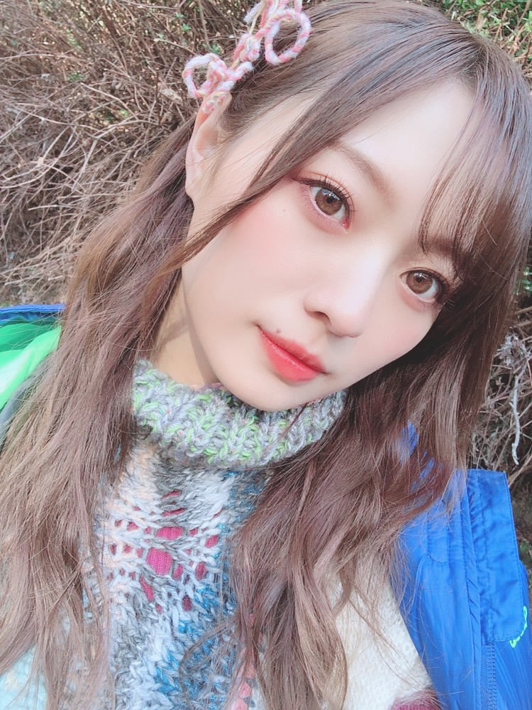
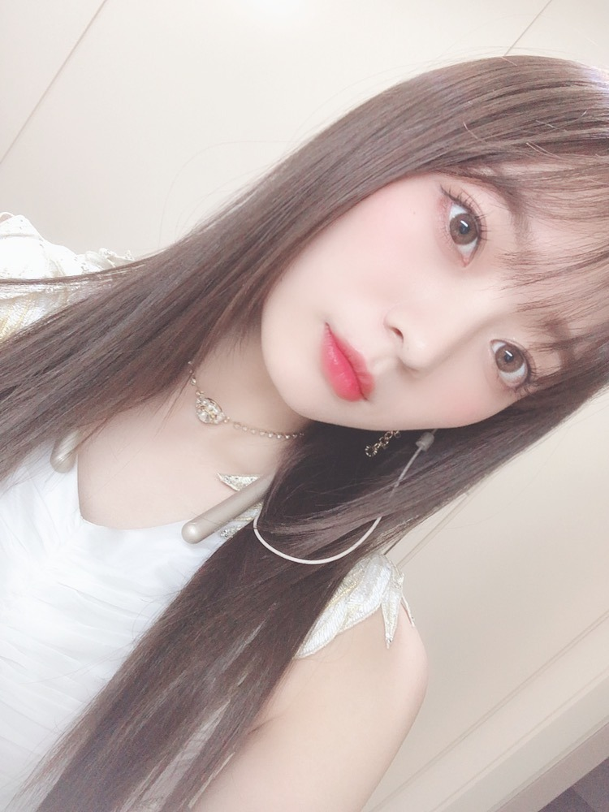
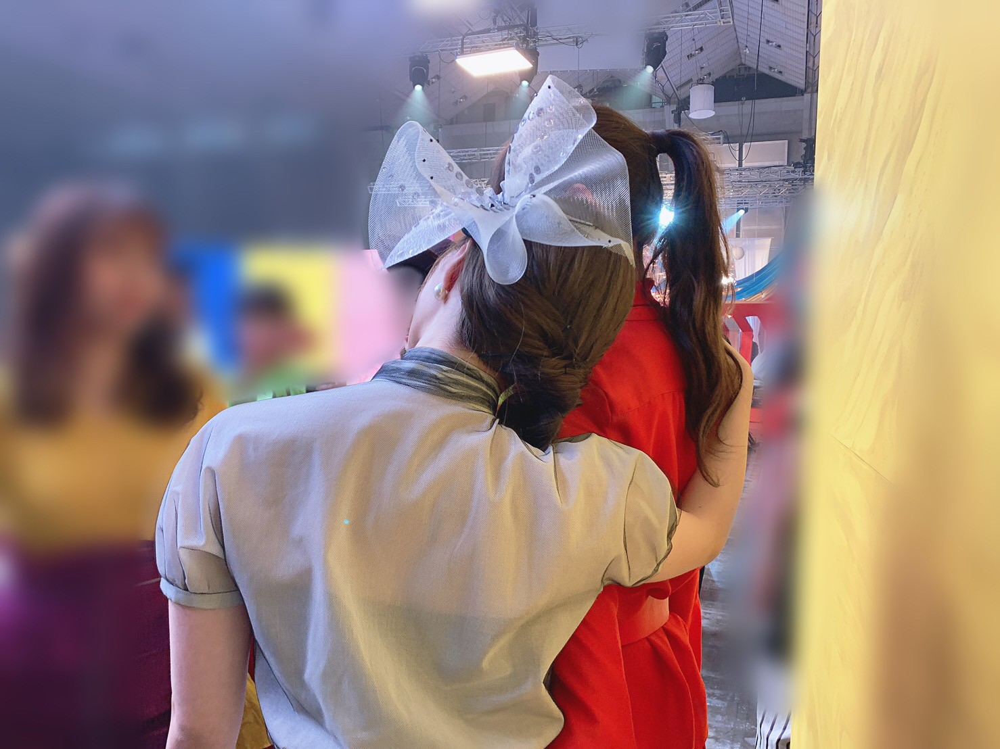
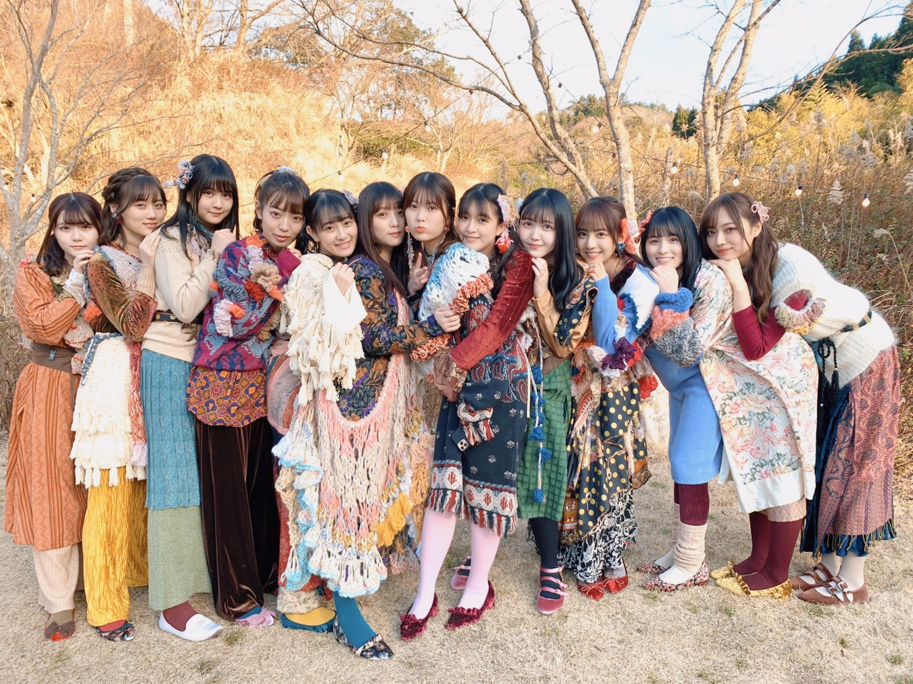

不安を遮るように

アウターを着ないで外に出れるくらい
最近はすっかり暖かくなり桜も咲いていて
もうこんな季節か〜と。
気づけばもう４月目前ですね。
と思ったら今日は少し寒い。
皆様いかがお過ごしですか？
ホワイトデーにお菓子を作った以来
お菓子作りにハマりそうです、、。
食べるのはもちろん、
作る過程も好きです〜。
それからハイキュー、
シーズン３まで観終わりました︎︎︎︎✌︎
終わるな終わるなと思いながら
少しずつ大切に観てきました。
最っ高に面白い！
バレー部現役時代に出逢いたい作品でした。
推しとか作らない人間ですが、
セッターポジを務めていた身としては
影山くんが好きかなあ、、
とか思いつつ、西谷くん、月島くんも好きです、、選べない。
オススメのアニメや映画ありますか？
洋画でも邦画でも。
感動ものを観たい気分です。
過去のドラマも見返したい、、

しあわせの保護色衣装。
背中に羽がついていたりとても綺麗です。
細かくストーンも散りばめられています。
アクセサリーもかわいい。
毎回衣装が楽しみで仕方ないです。
素敵なお洋服を身にまとっていられることが幸せだな〜。
あ、そういえばちょっと前に
すこーしだけ髪の毛切ったんだけど
気づいた方いるかな、いないか。
ちょっと毛先重めにしたんだよ〜
MVも公開されました！
しあわせで溢れたミュージックビデオ。
色鮮やかな所も、好きです
ストーリー性があって、
期別に分かれて踊る振りも。
何度も見返しては、見返す度に感動してしまいます。

とてもとても、美しく、綺麗でした。
ここにいられて幸せだな〜と、
何度も何度も感じた日でした。
白石さん、井上さんと過ごす時間の中に
少しずつ最後が増えてきました。
寂しいけれど、しっかり思い出として
作品として、残していきたいです。
毎日がBrand new day
MVも観てくださいましたか？
レトロな雰囲気で、
衣装も一人一人それぞれ個性があって
みんなの素の笑顔が見られてとても好きです
曲調もかなり好きです。
聴いていて心地がよくなります。

あの頃と、変わらずの雰囲気。
みんなの無邪気さ。
楽屋での賑やかさ、散らかり具合（笑）
どこまでも愛おしいなあと思う人達です。
ずっと続け〜途切れるな〜と思う程に
笑顔の耐えない現場でしたよ。
ずっと笑顔の１日だったなあ〜！！
久保にぴったりの曲！
おめでとう❤︎
お知らせです◎
雑誌
▽３／２２ 「アニメイトタイムズ」
▽３／２３ 「週刊ビックコミックスピリッツ」
▽３／２４ 「月刊TVfan」
▽３／２４ 「月刊ザテレビジョン」
▽３／３０ 「TV navi SMILE」
▽４／１ 「ぴあmovie Special」
▽４／２４ 「月刊ザテレビジョン」
▽３／２８ 「with」５月号
色々な企画に今月号も
登場させて頂いております！
毎月の撮影が楽しみで、
楽しくて楽しくて仕方がありません、、
５月号についてはまた書きます！
そして、
ドラマ「映像研には手を出すな！」の放送が
４／５ 24:50〜MBS、
４／７ 25:28〜TBS に加え
各局にて放送が決定致しました！
局によって放送開始日、時間が異なりますので
公式ホームページをチェックしてみてください。
"？？？しながら"コメンタリーも
「ひかりTV」、
「dTVチャンネル」にて配信されます！
盛りだくさん、、
いよいよもうすぐです、、！
ふ〜、ドキドキですね。
あ、明日はLINELIVEもありますよ。
18:30〜の予定でございます。
アニメ映像研が終わったところで
今度は私たちがバトンを受け取り
しっかりと視聴者の皆様に届ける番です！
ぜひご覧くださいませ！
でん２２歳おめでとう❤︎
昨日フライングでお祝いしました〜
これからもよろしくね︎︎︎︎✌︎
ついこの間前髪ちょっと短めにして
似合わないかなあと思っていたけど
一瞬で伸びてもう通常の梅澤。早い。
これは切りたてのとき。
２５日は 19:00〜生放送の
「Premium Music 2020」に
出演させていただきます！
ぜひ観てね。
では。
また更新します。
もし記憶を断捨離できる能力があったら
悲しく苦しく悔しい思い出は捨てるのかな〜
きっと、消さないだろうなあ。
なんて考えるときがありました、ふふ
皆様元気にお過ごしくださいませ。
Original：https://www.nogizaka46.com/s/n46/diary/detail/55376?ima=4940&cd=MEMBER